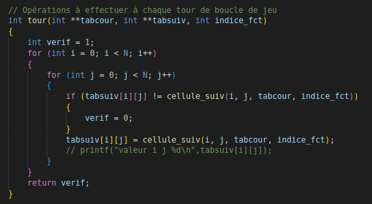

Avancement du projet
X-Fenêtré
Pavé de serpents
Jeu de la vie
Animation de sprites
Chef d'oeuvre
Apprentissage par renforcement
X-Fenêtré
Vincent

Loup

Mathilde
Principe
Cet exercice avait pour but de nous faire créer des fenêtres, de les déplacer et de les fermer, en manipulant la SDL2.
Démarche
Ici on explique notre démarche sur l'approche de cet exercice
Explications
Ici on explique notre démarche sur l'approche de cet exercice
Code
Ici on explique notre démarche sur l'approche de cet exercice
Détail par personne
Ici on explique notre démarche sur l'approche de cet exercice
Pavé de serpents
Vincent
Loup

Mathilde

Principe
Cet exercice avait pour but de nous faire manipuler les fonctions de bases au niveau des rendus dans une fenêtre, en manipulant des formes, des couleurs ...
Démarche
Ici on explique notre démarche sur l'approche de cet exercice
Explications
Ici on explique notre démarche sur l'approche de cet exercice
Code
Ici on explique notre démarche sur l'approche de cet exercice
Détail par personne
Ici on explique notre démarche sur l'approche de cet exercice
Jeu de la vie
Automate cellulaire dont les règles ont été définies par J. Conway en 1970.
Principe
L'état de l'automate à l'étape n se crée en fonction de l'état à l'étape n-1.
L'évolution de l'état d'une cellule dépend de ses huit états voisins les plus proches.
Les règles:
* A l'étape suivante, l'étape n-1 occupera une cellule vide avec seulement 3 cellules
adjacentes. (Naissance liée à l'environnement optimal)
* Les cellules qui sont occupées au niveau n-1 et qui ont deux ou trois cellules adjacentes
sont conservées au niveau n. Sinon, il sera vide. (Mort due à la désertification ou à la
surpopulation)
Démarche algorithmique
Mort et naissance des cellules :
On utilise un tableau de booléens SURVIE, en fonction du nombre de voisins cellulaires, pour
mettre en forme les règles de survie d'une cellule
et un tableau NAISSANCE similaire pour mettre en forme les règles de naissance d'une cellule.
D'un point de vue algorithmique cette fois-ci on va donc utiliser
des 0 ou des 1 en contenu du tableau pour représenter nos booléens.
A chaque nouveau tour, le nombre calculé de voisins est en réalite l'indice-1 de la case du tableau
à regarder pour obtenir la règle.
Sauvegarde et chargement :
Sauvegarde sous forme matricielle de la grille dans un fichier texte en appuyant en jeu sur
la touche s.
Chargement durant la phase de choix des premières cellules en appuyant sur la touche l
pour réutiliser le fichier texte et charger la configuration de jeu.
Comment jouer ?
1. Vous êtes au menu, choisissez entre les deux modes :
Monde délimité
Monde thorique
2. Vous arrivez maintenant sur une page blanche. Vous pouvez soit placer les premières
cellules à votre guise à l'aide de la souris ou alors appuyer sur la touche l pour charger
une configuration fichier texte existante.
3. Si vous avez choisi de placer les cellules par vous-même, appuyez sur espace pour
lancer le jeu de la vie.
4. Vous voyez maintenant le jeu se dérouler sous vos yeux et vous ralentir le processus en
appuyant sur la flèche du bas ou alors l'accelérer avec flèche du haut.
5. Cas possibles :
* Si le monde devient vide alors le message "cycle" sera écrit.
* Si le monde devient stable et ne bouge plus alors le message "monde stable" sera
écrit.
Dans les deux cas quittez le jeu en appuyant sur la croix pour fermer la fenêtre.
Code
Boucle de menu
Algo Clique 1
Algo Clique 2
Fonction tour
Fonctions calcul nombres de voisins
Fonctions jeu avec allocation et libération
Animation de Sprites
Vincent
Loup
Mathilde
Principe
Cet exercice avait pour but de apprendre le manipulation de sprite et donc d'images avec SDL2, SDL2_TTF et SDL2_IMAGE, notamment en affichant un fond de fenêtre ou en animant une image de personnage.
Démarche
Ici on explique notre démarche sur l'approche de cet exercice
Explications
Ici on explique notre démarche sur l'approche de cet exercice
Code
Ici on explique notre démarche sur l'approche de cet exercice
Détail par personne
Ici on explique notre démarche sur l'approche de cet exercice
Chef d'oeuvre
ATTENTION TRAVAUX !
Principe
Nous avons donc décidé de proposer un jeu mettant en scène une voiture et des portions de route qui se ferment et se rouvrent selon une chaine de markov se basant sur l'état précédent de la route. L’objectif du jeu étant de ne rouler que sur les routes ouvertes.
Démarche
Dans le cas de notre jeu, nous avons donc la présence de
la chaîne de Markov sur les probabilité de fermeture
d’une route en connaissant son état à l’instant précédent.
La route est une grille de 3 unités de large et chaque travaux occupe 1 unité.
Cependant afin que le joueur ne puisse que perdre à cause de lui-même, nous avons décidé
de n'occuper au maximum que 2 des 3 cases et, si 2 cases obstruées il y a, la prochaine vague
sera soit la même soit vide.
Les probabilités des états sont donc rangées dans ce tableau double :

Démarche algorithmique
La chaîne de Markov se base sur tous les états possibles pour les trois routes en même temps. Pour celà, on considère une matrice de 1 (pour l’état fermé) et de 0 (état ouvert) qui permet de déterminer l’aspect de la route sur plusieurs portions. On utilise un entier dans lequel on stocke la ligne de début afin de pouvoir ne remplacer que la dernière ligne (d’un point de vue affichage) par la nouvelle calculée grâce à Markov. Cela évite de devoir modifier toute la matrice à chaque fois.
Pour obtenir ce nouvel état, on demande un nombre entre 1 et 10 puis on détermine à quel état cela correspond. (Les probabilités sont donnée par des entiers entre 1 et 10)
On peut noter ici qu’on pourrait améliorer la lisibilité du programme en associant chaque état (ensemble de 0 et de 1) au nombre binaire associé pour les indices de ligne et de colonne de la matrice de Markov.
Code de l'affichage (SDL2)
Nous avons créé 3 fenêtres :
1. Menu du jeu inspiré du Jeu de la vie avec le bouton JOUER
et les Règles.
2. Passage à la fenêtre en cliquant sur jouer puis affichage d’un fond Sprite à
2 images qui s’alternent pour donner une impression de la voiture en mouvement.
Affichage également de la consigne “Appuyez sur ESPACE pour commencer” afin de préparer
le joueur à l’exécution de la partie jouable. Le joueur peut d’hors et déjà placer son
véhicule sur la voie qu’il souhaite.
Après appuie sur ESPACE les obstacles (travaux) arrivent par ligne (total de 5 lignes)
et agissent comme une file lors de leur disparition, FIFO. Ils arrivent grâce aux
chaînes de Markov (nouveau comportement influencé par les probabilités sachant le
comportement du précédent).
Un compteur est mis en place en haut à droite qui fait +1
à chaque ligne passée.
BUT: esquiver les travaux.
3. Passage à la 3ème fenêtre par collision entre le véhicule et un
espace de travaux. Entraîne un affichage du même fond que celui du menu
avec notamment le score du joueur.
Potentielles améliorations
- Permettre au mouvements des éléments du jeu d’être plus fluides
(gestion du jeu non pas par grille mais selon la position des obstacles)
- Sauvegarder le score maximal et le nom du joueur puis les écraser si celui du nouveau joueur est
meilleur.
Donc avoir chargé la sauvegarde du score maximal et son joueur au préalable dans le jeu.
- Ajout d'une explosion au niveau de la collision avant passage à la 3ème fenêtre. Ou bien ne pas
afficher de 3ème
fenêtre et mettre son contenu à la fin de la 2ème au moment de l’explosion de la voiture et donc de
la collision.
Code
Traduction état markov
Traduction markov état
Calcul nouvel état
Fonction score
Vidéos


Apprentissage par renforcement
⛸ ICE SLIDER ⛸

Principe
C'est le projet final que nous avions à réaliser ! Un petit jeu dans lequel une intelligence artificielle joue et apprend via un mécanisme par renforcement.
L'apprentissage par renforcement consiste pour une intelligence artificielle à apprendre les actions
à prendre à partir d'expériences et de perceptions, afin d'optimiser les récompenses au cours du
temps.
En effet, l'agent intelligent prend une décision en fonction de son état courant et de la
perception
de son environnement à cet état.
En retour, cet environnement lui donne des récompenses, qui peuvent être positives ou
négatives.
Au cours de nombreuses tentatives, l'agent va développer un comportement stratégique optimal, qui essaiera de maximiser la somme des récompenses au cours du temps.
Conception
Nous avons décidé pour se faire, de réaliser un jeu sur principe du labyrinthe.
Cependant, celui-ci ne sera pas un labyrinthe traditionnel puisque les chemins ne seront pas
délimités.
Se trouveront seulement sur la zone de jeu, des rochers ou des murs se servant de
points d'appuis.
En effet le sol sera de glace et le personnage devra, pour atteindre la sortie, bouger dans
une des quatres directions de
sorte qu'il puisse atteindre un rocher ou un mur et s'appuyer dessus pour aller dans une autre
direction.
Autrement, il continuera de glisser sur la glace jusqu'à rencontrer un obstacle, même si ce n'est
pas le bon chemin.
Le but de l'agent intelligent sera donc d'apprendre à trouver le bon chemin (ou les bons chemins) permettant d'atteindre la sortie en un moindre nombre d'étapes. Car oui, plusieurs combinaisons amenent à la même sortie.
Démarche

Ici on explique notre démarche sur l'approche de cet exercice
Démarche algorithmique
Ici on explique notre démarche sur l'approche de cet exercice
Explications
Ici on explique notre démarche sur l'approche de cet exercice
Code
Ici on explique notre démarche sur l'approche de cet exercice